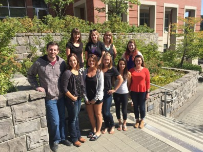
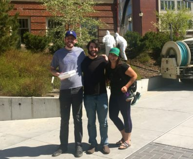

Lab Personnel
Graduate Students
Undergraduate Students
Dr. Cuttler will be accepting Experimental graduate students for Fall 2018 admissions.


Dr. Cuttler will be accepting Experimental graduate students for Fall 2018 admissions.

My diverse research interests are united by a focus on the links between health and cognition. I am currently focused on examining links between cannabis use and mental health (e.g., depression, anxiety, OCD) as well as the effects of chronic cannabis use and different forms of exercise on cognitive functioning. More specifically, my current research projects focus on examining i) the links between stress and cannabis use, ii) the perceived efficacy of different strains of cannabis on the treatment of anxiety, depression, stress, and other medical conditions, iii) the influence of cannabis use (early vs. late onset, concentrate use vs. marijuana use) on cognitive functioning, iv) the effects of different forms of exercise (aerobic, resistance, yoga) on memory, executive functioning, and creativity.